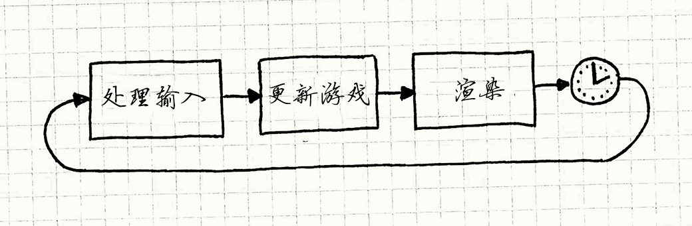
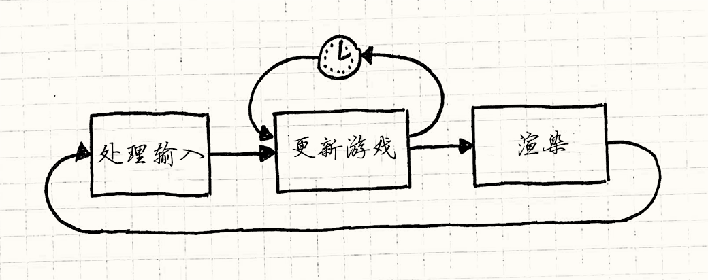
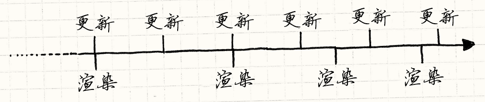

游戏循环
游戏设计模式Sequencing Patterns
Intent
意图
Decouple the progression of game time from user input and processor speed.
将游戏的处理过程和玩家输入解耦，和处理器速度解耦。
Motivation
动机
If there is one pattern this book couldn’t live without, this is it. Game loops are the quintessential example of a “game programming pattern”. Almost every game has one, no two are exactly alike, and relatively few programs outside of games use them.
如果本书中有一个不可或缺模式，那就是这个了。 游戏循环是“游戏设计模式”的精华例子。 几乎每个游戏都有，两两不同，除游戏外几乎没有程序使用。
To see how they’re useful, let’s take a quick trip down memory lane. In the olden days of computer programming when everyone had beards, programs worked like your dishwasher. You dumped a load of code in, pushed a button, waited, and got results out. Done. These were batch mode programs — once the work was done, the program stopped.
为了看看它多有用，让我们快速缅怀往事。 计算机程序的早先日子，每个人都长着胡子，程序像洗碗机一样工作。 你输入一堆代码，按个按钮，等待，然后获得结果，完成。 这些都是批处理程序——一旦工作完成，程序就停止了。
You still see these today, though thankfully we don’t have to write them on punch cards anymore. Shell scripts, command line programs, and even the little Python script that turns a pile of Markdown into this book are all batch mode programs.
你在今日仍然能看到这些，虽然感谢上天我们不必在打孔纸上面编写它们了。 终端脚本，命令行程序，甚至将Markdown翻译成这本书的Python脚本都是批处理程序。
Interview with a CPU
采访CPU
Eventually, programmers realized having to drop off a batch of code at the computing office and come back a few hours later for the results was a terribly slow way to get the bugs out of a program. They wanted immediate feedback. Interactive programs were born. Some of the first interactive programs were games:
最终，程序员意识到将批处理代码留在计算办公室，几个小时后获得结果，这样找程序漏洞又慢有糟糕。 他们想要立即的反馈。交互式程序诞生了。 第一批交互式程序中的就有游戏：
YOU ARE STANDING AT THE END OF A ROAD BEFORE A SMALL BRICK BUILDING . AROUND YOU IS A FOREST. A SMALL STREAM FLOWS OUT OF THE BUILDING AND DOWN A GULLY. > GO IN YOU ARE INSIDE A BUILDING, A WELL HOUSE FOR A LARGE SPRING.
You could have a live conversation with the program. It waited for your input, then it would respond to you. You would reply back, taking turns just like you learned to do in kindergarten. When it was your turn, it sat there doing nothing. Something like:
你可以和这个程序进行一些交流。 它等待你的输入，然后回应你。 你再回复，就像你在幼儿园中学到的那样轮流做事。 在你的回合，它坐在那里啥也不做。像这样：
while (true) { char* command = readCommand(); handleCommand(command); }
Event loops
事件循环
Modern graphic UI applications are surprisingly similar to old adventure games once you shuck their skin off. Your word processor usually just sits there doing nothing until you press a key or click something:
如果你剥开现代的图形UI的外皮，会惊讶地发现它们与老旧的冒险游戏差不多。 你的文本处理器通常呆在那里什么也不做，直到按了个键或者点了什么东西：
while (true) { Event* event = waitForEvent(); dispatchEvent(event); }
The main difference is that instead of text commands, the program is waiting for user input events — mouse clicks and key presses. It still works basically like the old text adventures where the program blocks waiting for user input, which is a problem.
最大的不同是，不使用文本命令，程序等待用户输入事件——鼠标点击和按键按下。 还是和以前的老式文本冒险游戏一样，程序阻塞等待用户输入，这是一个问题。
Unlike most other software, games keep moving even when the user isn’t providing input. If you sit staring at the screen, the game doesn’t freeze. Animations keep animating. Visual effects dance and sparkle. If you’re unlucky, that monster keeps chomping on your hero.
不像大多数其他软件，游戏即使没有玩家输入时也继续运行。 如果你站在那里看着屏幕，游戏不会冻结。动画继续动着。视觉效果继续闪烁。 如果不幸的话，怪物继续吞噬你的英雄。
This is the first key part of a real game loop: it processes user input, but doesn’t wait for it. The loop always keeps spinning:
这是游戏循环的第一个关键部分：它处理用户输入，但是不等待它。循环总是继续旋转：
while (true) { processInput(); update(); render(); }
We’ll refine this later, but the basic pieces are here. processInput() handles
any user input that has happened since the last call. Then, update() advances the game simulation one step. It runs
AI and physics (usually in that order). Finally, render() draws the game so
the player can see what happened.
我们之后会改善它，但是基本部分都在这里了。
processInput()处理上次调用到现在的任何输入。
然后update()运行游戏模拟的下一步。
这运行了AI和物理（通常是这种顺序）。
最终，render()绘制游戏，这样玩家可以看到发生了什么。
A world out of time
时间之外的世界
If this loop isn’t blocking on input, that leads to the obvious question: how fast does it spin? Each turn through the game loop advances the state of the game by some amount. From the perspective of an inhabitant of the game world, the hand of their clock has ticked forward.
如果这个循环不在输入阻塞，这就带来了明显的问题，要转多快？ 每次进行游戏循环都会发展一定的游戏状态。 从游戏世界的居民看来，他们手上的表就会滴答一下。
Meanwhile, the player’s actual clock is ticking. If we measure how quickly the game loop cycles in terms of real time, we get the game’s “frames per second”. If the game loop cycles quickly, the FPS is high and the game moves smoothly and quickly. If it’s slow, the game jerks along like a stop motion movie.
同时，玩家的真实手表也在滴答着。 如果我们用实际时间来测算游戏循环运行的速度，就得到了游戏的“帧每秒”。 如果游戏循环的更快，FPS就更高，游戏运行的更流畅更快。 如果很慢，游戏看上去就像是慢动作电影。
With the crude loop we have now where it just cycles as quickly as it can, two factors determine the frame rate. The first is how much work it has to do each frame. Complex physics, a bunch of game objects, and lots of graphic detail all will keep your CPU and GPU busy, and it will take longer to complete a frame.
我们现在写的这个循环是能转多快转多快，两个因素决定了帧率。 第一个是每帧要做多少工作。复杂的物理，众多游戏对象，图形细节都让CPU和GPU繁忙，这决定了需要多久能完成一帧。
The second is the speed of the underlying platform. Faster chips churn through more code in the same amount of time. Multiple cores, GPUs, dedicated audio hardware, and the OS’s scheduler all affect how much you get done in one tick.
第二个是潜在平台的速度。更快的芯片可以在同样的时间执行更多的代码。 多核，GPU组，独立声卡，以及系统的调度都影响了在一次滴答中能够做多少东西。
Seconds per second
每秒的秒数
In early video games, that second factor was fixed. If you wrote a game for the NES or Apple IIe, you knew exactly what CPU your game was running on and you could (and did) code specifically for that. All you had to worry about was how much work you did each tick.
在早期的视频游戏中，第二个参数是固定的。 如果你为NES或者Apple IIe写游戏，你明确知道游戏运行在什么CPU上。 你可以（而且事实也如此）为它特制代码。 你需要担忧的是每次滴答要做多少工作。
Older games were carefully coded to do just enough work each frame so that the game ran at the speed the developers wanted. But if you tried to play that same game on a faster or slower machine, then the game itself would speed up or slow down.
老些的游戏被仔细地编码，一帧只做足够的工作，这样游戏可以开发者想要的速率运行。 但是如果你想要在快些或者慢些的机器上运行同一游戏，游戏速度本身就会加速或减速。
These days, though, few developers have the luxury of knowing exactly what hardware their game will run on. Instead, our games must intelligently adapt to a variety of devices.
现在，很少有开发者可以奢侈地知道游戏运行的硬件条件。游戏必须自动适应多种设备。
This is the other key job of a game loop: it runs the game at a consistent speed despite differences in the underlying hardware.
这就是游戏循环的另一个关键任务：不管潜在的硬件条件，以固定速度运行。
The Pattern
模式
A game loop runs continuously during gameplay. Each turn of the loop, it processes user input without blocking, updates the game state, and renders the game. It tracks the passage of time to control the rate of gameplay.
一个游戏循环在游玩中不断运行。 每一循环回合，它无阻塞地处理玩家输入，更新游戏状态，渲染游戏。 它追踪时间的消耗来控制游戏的速度。
When to Use It
何时使用
Using the wrong pattern can be worse than using no pattern at all, so this section is normally here to caution against over-enthusiasm. The goal of design patterns isn’t to cram as many into your codebase as you can.
使用错误的模式比不使用模式更糟，所以这节通常是要小心过于热衷。 设计模式的目标不是往代码库里尽可能的塞东西。
But this pattern is a bit different. I can say with pretty good confidence that you will use this pattern. If you’re using a game engine, you won’t write it yourself, but it’s still there.
但是这个模式有所不同。我可以很自信的说你会使用这个模式。 如果你使用一个游戏引擎，你不需要自己写，但是它还在那里。
You might think you won’t need this if you’re making a turn-based game. But even there, though the game state won’t advance until the user takes their turn, the visual and audible states of the game usually do. Animation and music keep running even when the game is “waiting” for you to take your turn.
你可能认为在做回合制游戏时不需要它。 但是哪怕是那里，就算游戏状态到玩家回合才改变，视觉和听觉状态仍会改变。 动画和音乐会继续运行，哪怕游戏在“等待”你进行你的回合。
Keep in Mind
记住
The loop we’re talking about here is some of the most important code in your game. They say a program spends 90% of its time in 10% of the code. Your game loop will be firmly in that 10%. Take care with this code, and be mindful of its efficiency.
我们这里谈到的循环是游戏代码中最重要的部分。 有人说程序会花费90%的事件在10%的代码上。 游戏循环代码肯定在这10%中。 好好对待代码，注意它的效率。
You may need to coordinate with the platform’s event loop
你需要与平台的事件循环协调
If you’re building your game on top of an OS or platform that has a graphic UI and an event loop built in, then you have two application loops in play. They’ll need to play nice together.
如果你将游戏构建在操作系统的顶层或者有图形UI和内建事件循环的平台上， 那你就有了两个应用循环在运作。 它们需要很好的配合。
Sometimes, you can take control and make your loop the only one. For
example, if you’re writing a game against the venerable Windows API, your
main() can just have a game loop. Inside, you can call PeekMessage() to
handle and dispatch events from the OS. Unlike GetMessage(), PeekMessage()
doesn’t block waiting for user input, so your game loop will keep cranking.
有时候，你可以控制只运行其中一个。
举个例子，如果舍弃了Windows的珍贵API，main()可以只有一个游戏循环。
在里面，你可以调用PeekMessage()来处理和分发系统的事件。
不像GetMessage()，PeekMessage()没有阻塞等待用户输入，
因此你的游戏循环会保持运作。
Other platforms don’t let you opt out of the event loop so easily. If you’re
targeting a web browser, the event loop is deeply built into browser’s execution
model. There, the event loop will run the show, and you’ll use it as your game
loop too. You’ll call something like requestAnimationFrame() and it will
call back into your code to keep the game running.
其他的平台不会让你这么轻松的选择事件循环。
如果你基于网页浏览器，事件循环被内建在浏览器的执行模型深处。
这样，你会用事件循环作为游戏循环。
你会调用requestAnimationFrame()之类的，它会返回代码让游戏继续运行。
Sample Code
示例代码
For such a long introduction, the code for a game loop is actually pretty straightforward. We’ll walk through a couple of variations and go over their good and bad points.
如此长的介绍，而游戏循环的代码实际上很直观。 我们会浏览一堆变种并比较它们的好处和坏处。
The game loop drives AI, rendering, and other game systems, but those aren’t the
point of the pattern itself, so we’ll just call into fictitious methods here.
Actually implementing render(), update() and others is left as a
(challenging!) exercise for the reader.
游戏循环驱动了AI，渲染和其他游戏系统，但这些不是模式的要点，
所以我们会调用虚拟的方法。在实现了render()，update()之后，
剩下的作为（挑战！）练习给读者。
Run, run as fast as you can
跑，能跑多快跑多快
We’ve already seen the simplest possible game loop:
我们已经看到了可能是最简单的游戏循环：
while (true) { processInput(); update(); render(); }
The problem with it is you have no control over how fast the game runs. On a fast machine, that loop will spin so fast users won’t be able to see what’s going on. On a slow machine, the game will crawl. If you have a part of the game that’s content-heavy or does more AI or physics, the game will actually play slower there.
它的问题是你不能控制游戏运行的有多快。 在快速机器上，循环会运行的太快，玩家看不清发生了什么。 在慢速机器上，游戏在爬行。 如果游戏的一部分有大量内容或者做了很多AI或物理，游戏就会慢一些。
Take a little nap
休息一下
The first variation we’ll look at adds a simple fix. Say you want your game to run at 60 FPS. That gives you about 16 milliseconds per frame. As long as you can reliably do all of your game processing and rendering in less than that time, you can run at a steady frame rate. All you do is process the frame and then wait until it’s time for the next one, like so:
我们看到的第一个变化是增加一个简单的修复。 假设你想要你的游戏以60FPS运行。这样每帧大约16毫秒。 只要你用少于这个时间可靠地进行游戏所有的处理和渲染，就可以以稳定的帧率运行。 你需要做的就是处理这一帧然后等待，直到是时候处理下一个，就像这样：

The code looks a bit like this:
代码看上去像这样：
while (true) { double start = getCurrentTime(); processInput(); update(); render(); sleep(start + MS_PER_FRAME - getCurrentTime()); }
The sleep() here makes sure the game doesn’t run too fast if it processes a
frame quickly. It doesn’t help if your game runs too slowly. If it takes
longer than 16ms to update and render the frame, your sleep time goes
negative. If we had computers that could travel back in time, lots of things
would be easier, but we don’t.
如果它很快的处理完一帧，这里的sleep()保证了游戏不会运行太快。
如果你的游戏运行太慢这无法帮忙。
如果需要超过16ms来更新并渲染一帧，休眠的时间就变成了负的。
如果计算机能回退时间，很多事情就很容易了，但是它不能。
Instead, the game slows down. You can work around this by doing less work each frame — cut down on the graphics and razzle dazzle or dumb down the AI. But that impacts the quality of gameplay for all users, even ones on fast machines.
相反，游戏变慢了。 可以通过每帧少做些工作来解决这个问题——减少物理效果和绚丽光影，或者把AI变笨。 但是这影响了玩家的游戏体验，哪怕是那些有快速机器的。
One small step, one giant step
一小步，一大步
Let’s try something a bit more sophisticated. The problem we have basically boils down to:
- Each update advances game time by a certain amount.
- It takes a certain amount of real time to process that.
让我们尝试一些更加复杂的东西。我们拥有的问题基本上是：
- 每次更新将游戏时间推动一个固定量。
- 这消耗一定量的真实时间来处理它。
If step two takes longer than step one, the game slows down. If it takes more than 16 ms of processing to advance game time by 16ms, it can’t possibly keep up. But if we can advance the game by more than 16ms of game time in a single step, then we can update the game less frequently and still keep up.
如果第二步消耗的时间超过第一步，游戏变慢了。 如果它需要超过16ms来推动游戏时间16ms，它永远跟不上。 但是如果一步中推动游戏时间超过16ms，那我们可以减少更新频率，仍可以跟得上。
The idea then is to choose a time step to advance based on how much real time passed since the last frame. The longer the frame takes, the bigger steps the game takes. It always keeps up with real time because it will take bigger and bigger steps to get there. They call this a variable or fluid time step. It looks like:
接着的思路是基于上帧到现在有多少真实时间流逝来选择前进的时间。 这一帧花费的时间越长，游戏的间隔越大。 它总能跟上真实时间，因为它走的步子越来越大。 有人称之为变化的或者流动的时间间隔。它看上去像是：
double lastTime = getCurrentTime(); while (true) { double current = getCurrentTime(); double elapsed = current - lastTime; processInput(); update(elapsed); render(); lastTime = current; }
Each frame, we determine how much real time passed since the last game update
(elapsed). When we update the game state, we pass that in. The engine is then
responsible for advancing the game world forward by that amount of time.
每一帧，我们计算上次游戏更新（elapsed）到现在有多少真实时间过去了。
当我们更新游戏状态时将其传入。
游戏引擎负责推进游戏世界确定的时间量。
Say you’ve got a bullet shooting across the screen. With a fixed time step, in each frame, you’ll move it according to its velocity. With a variable time step, you scale that velocity by the elapsed time. As the time step gets bigger, the bullet moves farther in each frame. That bullet will get across the screen in the same amount of real time whether it’s twenty small fast steps or four big slow ones. This looks like a winner:
假设有一颗子弹跨过屏幕。 使用固定的时间间隔，在每一帧中，你根据它的速度移动它。 使用变化的时间间隔，你根据过去的时间决定速度增加的比例。 随着时间间隔增加，子弹在每帧间移动的更远。 无论是二十个快的小间隔还是四个慢的大间隔，子弹在真实时间里移动同样多的距离。 这看上去是获胜者：
-
The game plays at a consistent rate on different hardware.
-
游戏在不同的硬件上以固定的速度运行。
-
Players with faster machines are rewarded with smoother gameplay.
-
使用更快机器的玩家获得了更流畅的游戏体验。
But, alas, there’s a serious problem lurking ahead: we’ve made the game non-deterministic and unstable. Here’s one example of the trap we’ve set for ourselves:
但是，悲哀，这里有一个严重的问题： 游戏不再是确定的了，也不再稳定。 这是我们给自己挖的一个坑：
Say we’ve got a two-player networked game and Fred has some beast of a gaming machine while George is using his grandmother’s antique PC. That aforementioned bullet is flying across both of their screens. On Fred’s machine, the game is running super fast, so each time step is tiny. We cram, like, 50 frames in the second it takes the bullet to cross the screen. Poor George’s machine can only fit in about five frames.
假设我们有个双人联网游戏，Fred的游戏机是性能猛兽，而George正在使用他祖母的老爷机。 前面提到的子弹在他们的屏幕上飞行。 在Fred的机器上，游戏跑的超级快，每个时间间隔都很小。 比如，我们塞了50帧在子弹穿过屏幕的那一秒。 可怜的George的机器只能跑到大约5帧。
This means that on Fred’s machine, the physics engine updates the bullet’s position 50 times, but George’s only does it five times. Most games use floating point numbers, and those are subject to rounding error. Each time you add two floating point numbers, the answer you get back can be a bit off. Fred’s machine is doing ten times as many operations, so he’ll accumulate a bigger error than George. The same bullet will end up in different places on their machines.
这就意味着在Fred的机器上，物理引擎每秒更新50次位置，但是George的只能做5次。 大多数游戏使用浮点数，它们有每轮误差。 每次你将两个浮点数加在一起，获得的结果就会有点偏差。 Fred的机器做了10倍多的操作，所以它的误差要比George的更大。 同样的子弹最终在他们的机器上到了不同的位置。
This is just one nasty problem a variable time step can cause, but there are more. In order to run in real time, game physics engines are approximations of the real laws of mechanics. To keep those approximations from blowing up, damping is applied. That damping is carefully tuned to a certain time step. Vary that, and the physics gets unstable.
这是使用变化时间可引起的一个问题，但是还有更多。 为了以真实时间运行，游戏图形引擎是实际机制法则的近似值。 为了从爆炸计算这些近似值，添加了阻尼。 这个阻尼每次时间间隔都被小心的调整。 改变它，物理就不再稳定。
This instability is bad enough that this example is only here as a cautionary tale and to lead us to something better…
这种不稳定性太糟了，这个例子在这里的唯一原因是作为警示寓言，引领我们到更好的东西……
Play catch up
追逐游戏
One part of the engine that usually isn’t affected by a variable time step is rendering. Since the rendering engine captures an instant in time, it doesn’t care how much time advanced since the last one. It renders things wherever they happen to be right then.
游戏中渲染通常不会被动态时间间隔影响到。 由于渲染引擎使用时间上的一瞬，它不会计算上次到现在过了多久。 它在事物该在的地方渲染。
We can use this fact to our advantage. We’ll update the game using a fixed time step because that makes everything simpler and more stable for physics and AI. But we’ll allow flexibility in when we render in order to free up some processor time.
我们可以利用这点作为优势。 用固定的时间间隔更新游戏，因为这让所有事情变得简单，物理和AI也更加稳定。 但是我们允许灵活渲染来释放一些处理器时间。
It goes like this: A certain amount of real time has elapsed since the last turn of the game loop. This is how much game time we need to simulate for the game’s “now” to catch up with the player’s. We do that using a series of fixed time steps. The code looks a bit like:
它像这样运作：自上一次游戏循环前进定量的时间。 这就是需要为游戏的“现在”模拟前进，追上玩家的时间。 我们使用一系列的固定时间间隔。 代码看上去像是这样的：
double previous = getCurrentTime(); double lag = 0.0; while (true) { double current = getCurrentTime(); double elapsed = current - previous; previous = current; lag += elapsed; processInput(); while (lag >= MS_PER_UPDATE) { update(); lag -= MS_PER_UPDATE; } render(); }
There’s a few pieces here. At the beginning of each frame, we update lag based
on how much real time passed. This measures how far the game’s clock is behind
compared to the real world. We then have an inner loop to update the game, one
fixed step at a time, until it’s caught up. Once we’re caught up, we render and
start over again. You can visualize it sort of like this:
这里还有几个小块。
在每一帧的开头，基于有多少真实时间过去更新lag。
这测量了游戏世界时钟比真实世界落后了多少，直到追上。
一旦我们追上，我们就渲染然后重新开始。
你可以将其视觉化如下：

Note that the time step here isn’t the visible frame rate anymore.
MS_PER_UPDATE is just the granularity we use to update the game. The shorter
this step is, the more processing time it takes to catch up to real time. The
longer it is, the choppier the gameplay is. Ideally, you want it pretty short,
often faster than 60 FPS, so that the game simulates with high fidelity on fast
machines.
注意这里的时间间隔不是可见的帧率了。
MS_PER_UPDATE只是我们更新游戏的间隔。
这个间隔越短，需要越多的处理时间来追上真实时间。
它越长，游戏抖动的越厉害。
理想上，你想要它特别短，通常快过60FPS，所以游戏在快速机器上会有高效的表现。
But be careful not to make it too short. You need to make sure the time step
is greater than the time it takes to process an update(), even on the slowest hardware. Otherwise, your game simply can’t catch up.
但是小心不要把它整得太短了。
你需要保证即使在最慢的硬件上，这个时间间隔长于处理一个update()的时间。
否则，你的游戏就跟不上了。
Fortunately, we’ve bought ourselves some breathing room here. The trick is that we’ve yanked rendering out of the update loop. That frees up a bunch of CPU time. The end result is the game simulates at a constant rate using safe fixed time steps across a range of hardware. It’s just that the player’s visible window into the game gets choppier on a slower machine.
幸运的是，我们给自己弄出了一些活动空间。 技巧是我们将渲染拉出了更新循环。 这释放了很大一部分CPU时间。 结果是游戏以固定速率模拟，使用了对于硬件安全的固定时间间隔。 只是玩家的视觉窗口在慢速机器上会有抖动。
Stuck in the middle
卡在中间
There’s one issue we’re left with, and that’s residual lag. We update the game at a fixed time step, but we render at arbitrary points in time. This means that from the user’s perspective, the game will often display at a point in time between two updates.
我们还剩一个问题，就是剩下的延迟。 以固定的时间间隔更新游戏，但是在任意时间渲染。 这就意味着从玩家的角度看，游戏经常在两次更新之间的时候显示。
Here’s a timeline:
这是时间线：

As you can see, we update at a nice tight, fixed interval. Meanwhile, we render whenever we can. It’s less frequent than updating, and it isn’t steady either. Both of those are OK. The lame part is that we don’t always render right at the point of updating. Look at the third render time. It’s right between two updates:
就像你看到的那样，我们以紧凑固定的间隔更新。 同时，我们在任何可以的时候渲染。 它比更新发生的要少，而且也不稳定。 两者都没问题。糟糕的是，我们不总能在正确的时间点渲染。 看看第三次渲染时间。它在两次更新之间。

Imagine a bullet is flying across the screen. On the first update, it’s on the left side. The second update moves it to the right side. The game is rendered at a point in time between those two updates, so the user expects to see that bullet in the center of the screen. With our current implementation, it will still be on the left side. This means motion looks jagged or stuttery.
想象子弹飞过屏幕。第一次更新中，它在左边。 第二次更新将它移到了右边。 这个游戏在两次更新间的时间点渲染，所以玩家期待看到子弹在屏幕的中间。 而我们现在的实现中，它还在左边。这意味着移动看上去是锯齿状的。
Conveniently, we actually know exactly how far between update frames we are
when we render: it’s stored in lag. We bail out of the update loop when it’s
less than the update time step, not when it’s zero. That leftover amount?
That’s how far into the next frame we are.
方便的是，我们实际知道渲染时距离两帧的时间：它被存储在lag中。
我们在它比更新时间间隔小时取出，而不是它是零的时候。
剩余量？那就是到下一帧的时间。
When we go to render, we’ll pass that in:
当我们要渲染时，我们会将其传入：
render(lag / MS_PER_UPDATE);
The renderer knows each game object and its current velocity. Say that bullet
is 20 pixels from the left side of the screen and is moving right 400 pixels per
frame. If we are halfway between frames, then we’ll end up passing 0.5 to
render(). So it draws the bullet half a frame ahead, at 220 pixels. Ta-da,
smooth motion.
渲染器知道每个游戏对象以及它当前的速度。
假设子弹在屏幕左边20像素的地方，正在以400像素每帧的速度向右移动。
如果在两帧中间，我们会传0.5给render()。
它绘制了半帧之前的图形，在220像素，好啦，平滑移动。
Of course, it may turn out that that extrapolation is wrong. When we calculate the next frame, we may discover the bullet hit an obstacle or slowed down or something. We rendered its position interpolated between where it was on the last frame and where we think it will be on the next frame. But we don’t know that until we’ve actually done the full update with physics and AI.
当然，也许这种推断是错误的。 在我们计算下一帧时，也许会发现子弹碰撞到另一障碍或减速或别的什么。 我们在它上一帧和我们*认为下一帧的位置之间插值。 但是在完成物理和AI更新后我们才能真的知道。
So the extrapolation is a bit of a guess and sometimes ends up wrong. Fortunately, though, those kinds of corrections usually aren’t noticeable. At least, they’re less noticeable than the stuttering you get if you don’t extrapolate at all.
所以推断有猜测的成分，有时候结果是错误的。 但是，幸运的，这种修正通常不可感知。 最起码，它们比你不使用推断导致的结巴更不明显。
Design Decisions
设计决策
Despite the length of this chapter, I’ve left out more than I’ve included. Once you throw in things like synchronizing with the display’s refresh rate, multithreading, and GPUs, a real game loop can get pretty hairy. At a high level, though, here are a few questions you’ll likely answer:
不管这一章的长度，我没提的超过我包含的。 一旦你将显示的刷新频率，多线程，多GPU，加到里面，真正的游戏循环就会变得毛绒绒。 在高层中，这里还有一些问题你需要回答：
Do you own the game loop, or does the platform?
你拥有游戏循环，还是平台？
This is less a choice you make and more one that’s made for you. If you’re making a game that runs in a web browser, you pretty much can’t write your own classic game loop. The browser’s event-based nature precludes it. Likewise, if you’re using an existing game engine, you will probably rely on its game loop instead of rolling your own.
与其说这是你的选择，不如说有人为你选了。 如果你在做浏览器中的游戏，你很可能不能写自己的经典游戏循环。 浏览器本身的事件驱动阻碍了这一点。 同样，如果你使用现存的游戏引擎，你很可能依赖于它的游戏循环而不是自己写一个。
-
Use the platform’s event loop:
-
使用平台的事件循环：
-
It’s simple. You don’t have to worry about writing and optimizing the core loop of the game.
-
简单。你不必担心写和优化自己的游戏核心循环。
-
It plays nice with the platform. You don’t have to worry about explicitly giving the host time to process its own events, caching events, or otherwise managing the impedance mismatch between the platform’s input model and yours.
-
平台友好。你不必明确地给平台时间处理它自己的事件，缓存事件，或者任何管理平台输入模型和你的不同之处。
-
You lose control over timing. The platform will call your code as it sees fit. If that’s not as frequently or as smoothly as you’d like, too bad. Worse, most application event loops weren’t designed with games in mind and usually are slow and choppy.
-
你失去了对时间的控制。平台会在它方便时调用代码。如果这不如你想要的平滑或者频繁，太糟了。更糟的是，大多数应用的事件循环没有为游戏设计，通常是又慢又抖动。
-
-
Use a game engine’s loop:
-
使用游戏引擎的循环：
-
You don’t have to write it. Writing a game loop can get pretty tricky. Since that core code gets executed every frame, minor bugs or performance problems can have a large impact on your game. A tight game loop is one reason to consider using an existing engine.
-
不必自己写。写游戏循环非常需要技巧。由于是每帧都要执行的核心代码，小小的漏洞或者性能问题就对游戏有巨大的影响。紧密的游戏循环是使用现有引擎的原因之一。
-
You don’t get to write it. Of course, the flip side to that coin is the loss of control if you do have needs that aren’t a perfect fit for the engine.
-
不必自己写。当然，硬币的另一面是，如果你真的要的不是引擎给的，你就失去了控制。
-
-
Write it yourself:
-
自己写：
-
Total control. You can do whatever you want with it. You can design it specifically for the needs of your game.
-
完全的控制。你可以做任何想做的事情。你可以为游戏的需求订制。
-
You have to interface with the platform. Application frameworks and operating systems usually expect to have a slice of time to process events and do other work. If you own your app’s core loop, it won’t get any. You’ll have to explicitly hand off control periodically to make sure the framework doesn’t hang or get confused.
-
你需要与平台交互。应用框架和操作系统通常有时间片去处理事件和做其他工作。如果你拥有应用的核心循环，它就没有。你得显式定期检查，保证框架没有挂起或者糊涂。
-
How do you manage power consumption?
如何管理能量消耗？
This wasn’t an issue five years ago. Games ran on things plugged into walls or on dedicated handheld devices. But with the advent of smartphones, laptops, and mobile gaming, the odds are good that you do care about this now. A game that runs beautifully but turns players’ phones into space heaters before running out of juice thirty minutes later is not a game that makes people happy.
这在五年前还不是问题。 游戏运行在插到插座上的或者专用的设备上。 但是随着智能手机，笔记本以及移动游戏的发展，这些东西现在需要关注了。 能完美运行但会耗干三十分钟前充的电，并将手机变成空间加热器，可不是一个能让人开心的游戏。
Now, you may need to think not only about making your game look great, but also use as little CPU as possible. There will likely be an upper bound to performance where you let the CPU sleep if you’ve done all the work you need to do in a frame.
现在，你需要考虑的不仅仅是让游戏看上去很好，同时也要尽可能少的使用CPU。 如果让需要的工作在一帧之内完成后，让CPU睡眠，那会对性能造成上限。
-
Run as fast as it can:
-
尽可能快的运行：
This is what you’re likely to do for PC games (though even those are increasingly being played on laptops). Your game loop will never explicitly tell the OS to sleep. Instead, any spare cycles will be spent cranking up the FPS or graphic fidelity.
这就是你通常想让PC游戏做的事情（即使在笔记本上运行的数目不断增加）。游戏循环永远不会显式告诉系统休眠。相反，空闲的循环被划在提升FPS或者图像显示上了。
This gives you the best possible gameplay experience but, it will use as much power as it can. If the player is on a laptop, they’ll have a nice lap warmer.
这会给你最好的游戏体验。但是，也会尽可能多的使用电量。如果玩家在笔记本上玩，他们得到了一个很好的笔记本加热器。
-
Clamp the frame rate:
-
固定帧率
Mobile games are often more focused on the quality of gameplay than they are on maximizing the detail of the graphics. Many of these games will set an upper limit on the frame rate (usually 30 or 60 FPS). If the game loop is done processing before that slice of time is spent, it will just sleep for the rest.
移动游戏更加注意游戏体验质量，而不是图形细节的最大化。很多这种游戏都会设置最大帧率（通常是30或60FPS）。如果游戏循环在分配的时间片消耗完之前完成，在剩余的时间它会休眠。
This gives the player a “good enough” experience and then goes easy on their battery beyond that.
这给了玩家“足够好的”游戏体验，也让背后的电池轻松了一点。
How do you control gameplay speed?
你如何控制游戏速度？
A game loop has two key pieces: non-blocking user input and adapting to the passage of time. Input is straightforward. The magic is in how you deal with time. There are a near-infinite number of platforms that games can run on, and any single game may run on quite a few. How it accommodates that variation is key.
游戏循环有两个关键部分：不阻塞用户输入和对通过事件的适应。 输入很直观。魔力之处在于你如何处理事件。 这里有数不尽的游戏可运行的平台， 每个游戏都能在其中一些上运行。 如何适应变化就是关键。
-
Fixed time step with no synchronization:
-
固定间隔，没有同步：
This was our first sample code. You just run the game loop as fast as you can.
这是我们第一个样例代码。你只需尽可能的快运行游戏。
-
It’s simple. This is its main (well, only) virtue.
-
简单。这是主要的（好吧，唯一的）好处。
-
Game speed is directly affected by hardware and game complexity. And its main vice is that if there’s any variation, it will directly affect the game speed. It’s the fixie of game loops.
-
游戏速度直接与硬件和游戏复杂度相关。主要的缺点是如果有变化，会直接影响游戏速度。它与游戏循环咬死了。
-
-
Fixed time step with synchronization:
-
固定间隔，有同步：
The next step up on the complexity ladder is running the game at a fixed time step but adding a delay or synchronization point at the end of the loop to keep the game from running too fast.
下一步对复杂度控制是使用固定的时间间隔，但是在循环的末尾增加同步点，保证游戏不会运行的过快。
-
Still quite simple. It’s only one line of code more than the probably-too-simple-to-actually-work example. In most game loops, you will likely do synchronization anyway. You will probably double buffer your graphics and synchronize the buffer flip to the refresh rate of the display.
-
还是很简单。这比过于简单而不能运行的例子只多了一行代码。在多数游戏循环中，你可能总会做一些同步。你可能双缓冲图形并将缓存块与显示更新的频率同步。
-
It’s power-friendly. This is a surprisingly important consideration for mobile games. You don’t want to kill the user’s battery unnecessarily. By simply sleeping for a few milliseconds instead of trying to cram ever more processing into each tick, you save power.
-
电量友好。这是移动游戏惊人重要的关注点。你不想不必要的消耗电量。通过简单的休眠几个毫秒而不是试图把更多处理塞入每个滴答，你节约了电量。
-
The game doesn’t play too fast. This fixes half of the speed concerns of a fixed loop.
-
游戏不会运行的太快。这解决了固定循环速度的一半问题。
-
The game can play too slowly. If it takes too long to update and render a game frame, playback will slow down. Because this style doesn’t separate updating from rendering, it’s likely to hit this sooner than more advanced options. Instead of just dropping rendering frames to catch up, gameplay will slow down.
-
游戏可能运行的太快。如果花了太多时间更新和渲染一帧，播放也会减缓。因为这个风格没有分离更新和渲染，它比高级更新系统更容易碰到这点。没有扔掉渲染帧来追上，游戏本身会变慢。
-
-
Variable time step:
-
动态间隔：
I’ll put this in here as an option in the solution space with the caveat that most game developers I know recommend against it. It’s good to remember why it’s a bad idea, though.
我把这个放在这里作为问题的解决办法之一，附加警告：大多数我认识的游戏开发者反对它。不过记住为什么这是坏主意是很有用的。
-
It adapts to playing both too slowly and too fast. If the game can’t keep up with real time, it will just take larger and larger time steps until it does.
-
适应运行太快或者太慢。如果游戏不能追上真实时间，那就要消耗越来越多的时间间隔直到它跟上。
-
It makes gameplay non-deterministic and unstable. And this is the real problem, of course. Physics and networking in particular become much harder with a variable time step.
-
让游戏不确定而且不稳定。这是真正的问题，当然。特别是物理和网络部分使用动态时间间隔会愈发的困难。
-
-
Fixed update time step, variable rendering:
-
固定更新间隔，动态渲染：
The last option we covered in the sample code is the most complex, but also the most adaptable. It updates with a fixed time step, but it can drop rendering frames if it needs to to catch up to the player’s clock.
在示例代码中覆盖的最后一个选项是最复杂的，但是也是最有适应性的。它以固定时间间隔更新，但是如果需要赶上玩家的时钟，可以扔掉一些渲染帧。
-
It adapts to playing both too slowly and too fast. As long as the game can update in real time, the game won’t fall behind. If the player’s machine is top-of-the-line, it will respond with a smoother gameplay experience.
-
适应运行太快或者太慢。只要可以在真实时间上更新，游戏就不会落后。如果玩家的机器是顶配，它会回以更平滑的游戏体验。
-
It’s more complex. The main downside is there is a bit more going on in the implementation. You have to tune the update time step to be both as small as possible for the high-end, while not being too slow on the low end.
-
更复杂。主要负面问题是需要在实现中写更多东西。你需要将更新时间间隔调整的尽可能小来适应高端机，同时不至于在低端机上太慢。
-
See Also
参见
-
The classic article on game loops is Glenn Fiedler’s “Fix Your Timestep“. This chapter wouldn’t be the same without it.
-
关于游戏循环的经典文章是Glenn Fiedler的”Fix Your Timestep“。如果没有这一篇文章，这章就不会是这个样子。
-
Witters’ article on game loops is a close runner-up.
-
Witters关于game loops的文章是一个很接近的亚军。
-
The Unity framework has a complex game loop detailed in a wonderful illustration here.